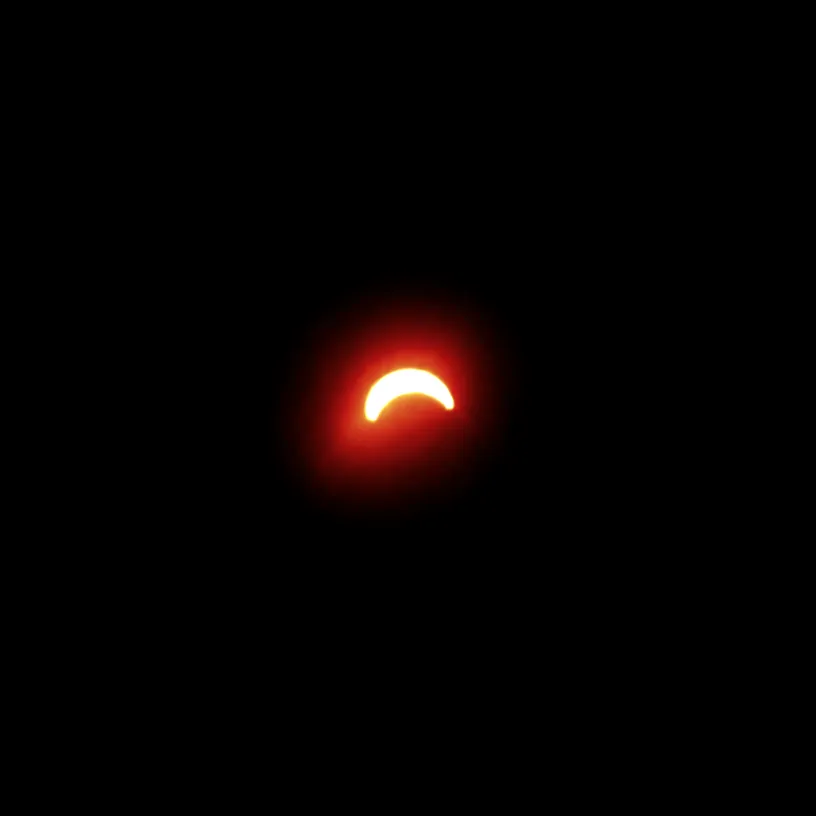
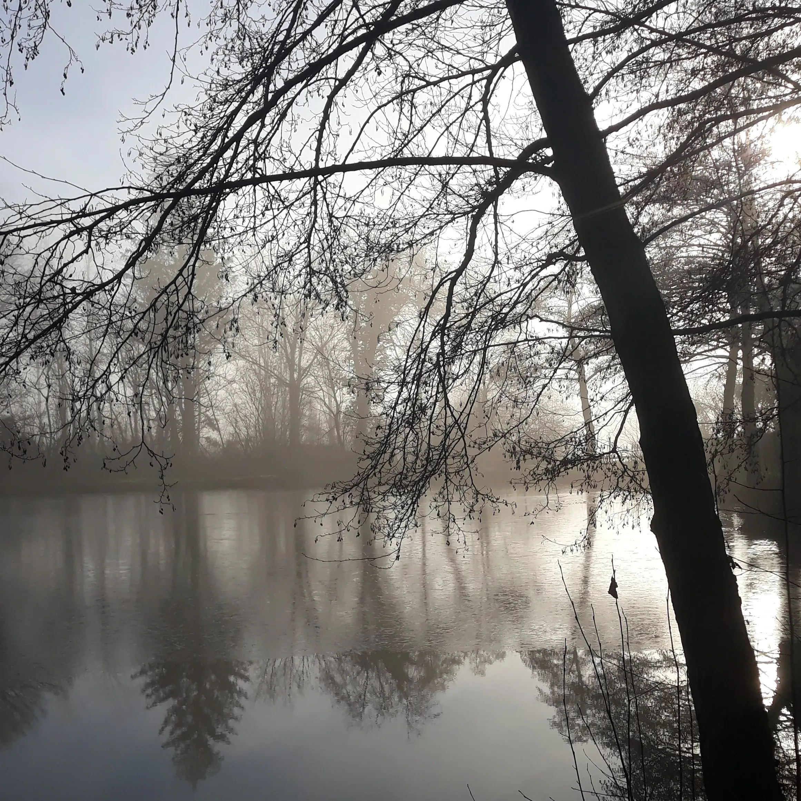
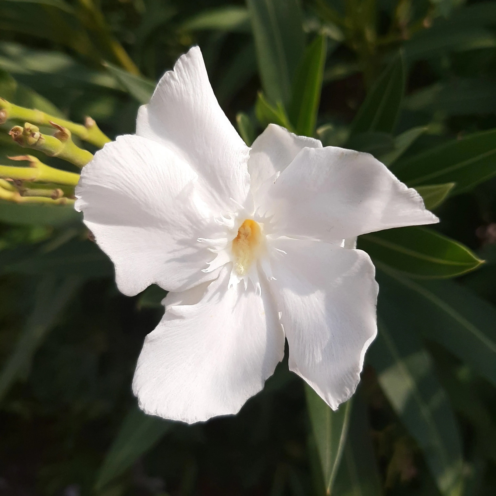
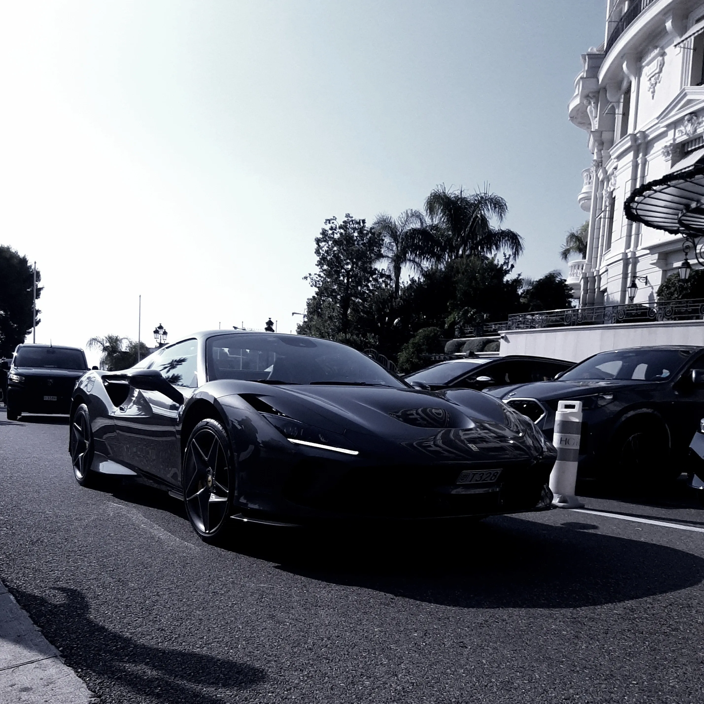

En dehors du code
Mes photos
Quelques paysages, animaux et voitures photographiés au fil de mes sorties.








En dehors du code
Quelques paysages, animaux et voitures photographiés au fil de mes sorties.



